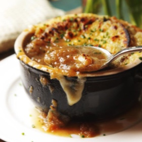

← All recipes
Pressure Cooker French Onion Soup

Servings: 8 servings · Prep: 15 mins · Cook: 75 mins
Ingredients
- 6 tablespoons unsalted butter, plus more for toasts (3 ounces; about 90 g)
- 3 pounds yellow or mixed onions, sliced 1/8 inch thick (1.4 kg; about 4 to 5 large onions) (see note)
- 2 teaspoons Diamond Crystal kosher salt, plus more to taste; for table salt, use half as much by volume
- Freshly ground black pepper
- 1/4 cup (60 ml) dry sherry, such as Amontillado
- 2 quarts (about 2 L) homemade or store-bought low-sodium chicken stock
- 2 sprigs thyme
- 1 bay leaf
- 1 1/2 teaspoons (7 ml) cider vinegar
- 16 bowl-size slices rustic bread, toasted until crisp
- 1 medium clove garlic
- 1 pound (450 g) Gruyère cheese, grated
- Freshly minced chives, for garnish
Directions
- Melt butter in an electric or stovetop pressure cooker over medium heat. Without stirring, add onions. Season with salt and pepper. Seal pressure cooker and heat to high pressure (12.5 to 15 psi). Cook at high pressure for 20 minutes. Remove from heat. Let the pressure release naturally (float valve will drop; this will take about 30 minutes.) Remove lid from cooker.
- Continue cooking with lid off, stirring constantly, until liquid inside has completely reduced and the onions are golden brown, about 5 minutes. Add sherry and bring to a simmer. Cook until alcohol smell is mostly gone, about 3 minutes. Add stock, thyme, and bay leaf, raise heat to medium-high, and bring to a simmer. Lower heat and simmer for 10 minutes. Add cider vinegar and season with salt and pepper to taste. Discard thyme sprigs and bay leaf.
- To Serve: Preheat broiler and move oven rack to top position. Butter toasts and rub with garlic clove until fragrant. Spoon a small amount of broth into the bottoms of 8 ovenproof serving bowls, then top with half the toasts. Sprinkle some Gruyère on top of toasts, then spoon more soup and onions on top, nearly filling the bowls. Set the remaining 8 toasts in each bowl, pushing to nearly submerge them. Top with remaining Gruyère and set bowls on a rimmed baking sheet. Broil until cheese is melted and browned in spots, about 5 minutes. Garnish with chives and serve.
Original source: seriouseats.com